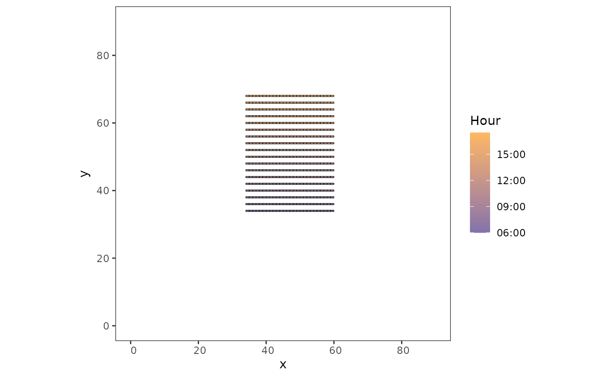
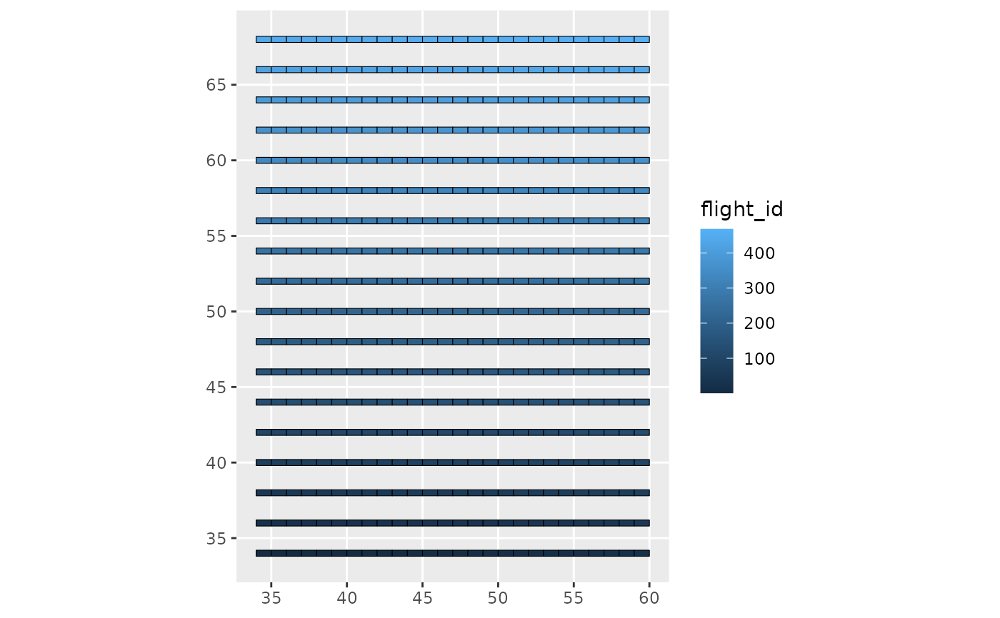

Assign a flight plan to a survey design
assign_flight_plan.RdAssign a flight plan to a survey design
Usage
assign_flight_plan(
sf_segments,
flight_id,
col_trans_id,
flight_day,
survey_start_hour,
flight_speed,
intertransect_gap_duration
)Arguments
- sf_segments
sf object, segments to assign flight plan to
- flight_id
numeric vector, giving the order by which the segments must be surveyed
- col_trans_id
character, the column in sf_segments storing transect names
- flight_day
character, the day the survey flight is carried out (ymd format: "2022-02-08")
- survey_start_hour
character, the hour the survey is started (hms format: "06:00:00")
- flight_speed
numeric, the speed at which a single segment is surveyed (in km/h)
- intertransect_gap_duration
numeric, the duration of the transit from a transect to the other (in seconds)
Value
a sf table with four additional columns (transect_id, flight_id, start_time and end_time) informing the period over which each segment is surveyed
See also
Other survey simulation functions:
detection_process(),
generate_survey_plan(),
launch_survey_on_movement()
Examples
surv <- generate_survey_plan(bbx_xmin = 30, bbx_xmax = 65, bbx_ymin = 30, bbx_ymax = 65,
start_x = 34, end_x = 60, start_y = 34, end_y = 68,
space_out_factor = 2, segmentize = TRUE, seg_length = 1,
buffer = TRUE, buffer_width = 0.2
)
# assign the time periods to each segment
flight_plan <- assign_flight_plan(
sf_segments = surv$buffered_segments,
flight_id = c(1:468),
col_trans_id = "transect",
flight_day = "2022-08-01",
survey_start_hour = "06:00:00",
flight_speed = 160,
intertransect_gap_duration = 60*30
)
# plot to check everything is ok
library(ggplot2)
ggplot(flight_plan) +
geom_sf(aes(fill = start_time),
color = "black", size = 0.2) +
scale_fill_datetime(low = "#8073ac", high = "#fdb863") +
theme_bw() + theme(panel.grid = element_blank()) +
labs(fill = "Hour", limits = c("06:00", "16:16"), x = "x", y = "y")+
coord_sf(xlim = c(0,90), ylim = c(0,90))

ggplot(flight_plan) +
geom_sf(aes(fill = flight_id),
color = "black", size = 0.2)
